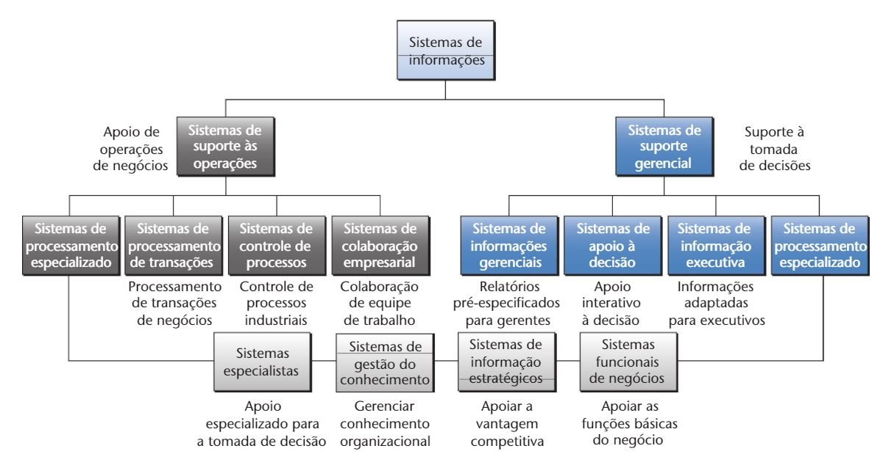

Sistemas de informação
Tipos de Sistemas
Os sistemas são mais classificações do que de fato softwares. Podendo ser divididos não por áreas/setores e sim por finalidades.
- Sistema OPERACIONAL
- Transações eficientes
- Automatizar trivialidades
- Controlar processos internos
- Integrar setores
- Apoio a tomada de decisão estruturada
- Sistema GERENCIAL
- Informa gerentes e gestores
- Apoia decisão semi-estruturada e não estruturada
- Possibilidade de simulações
- Auxilia no plano estratégico
- Comum a gerentes, diretores e presidentes
SPT
- Automatiza processos e rotinas operacionais
- Processa entrada de dados e efetua gravação no banco. Ex: Cadastro de clientes
- Gera documentos contabeis da empresa e formulários
- Informações de monitoramento são alimentadas por ele
- Mais comum nas empresas
- Cadastro de clientes, funcionários etc
SCP
- Sistema singular, será adaptado para cada empresa, buscando implementar uma atividade especifica
- Processos não humanos (Impossíveis ao humano, como verificar temperatura de caldeira)
- Uso de sensores e redes para tal controle e processamento simples
- Entrada de dados especializada
Sis.Especialistas
Apesar de dentro dos sistemas de controle, ele é uma classe mais especifica, e geralmente usa uma rede neural, por mais simples que seja
- Substitui atividades de um humano especializado
- Feito também para controle e manutenção de processos
- Até mesmo um assistente eletrônico é um exemplo valido
Sis.Colaborativos
- Evita redundancia de dados
- Processo de trabalho coletivo
- Ausencia de copias do trabalho
- Envolvendo setores similares ou diferentes
SIG
- Puramente gerador de informações, não contribui
- Organiza em graficos ou qualquer tipo de interface mais amigáve
- Visam tempos maiores que sistemas operacionais
- São alimentados por sistemas operacionais
- Dados diversificados, seu unico trabalho é organizar as informaçõe que recebe dos diversos outros sistemas
- Usados por gerentes, dificilmente pelo nível executivo
SSD
- Também chamado de S. Apoio a decisão
- Diferente do SIG, possui interação
- Capacidade de simulação
- Processo de decisão mais perigosas
SSE
-
Visão externa e interna da empresa
- Usado apenas por nível mais alto da pirâmide de decisão
- Sistema completo e integrado a todo e qualquer outro sistema da própria empresa
- O mais completo, focado em decisões do mais longo prazo
Imagens Auxiliares

Ir para a próxima pagina